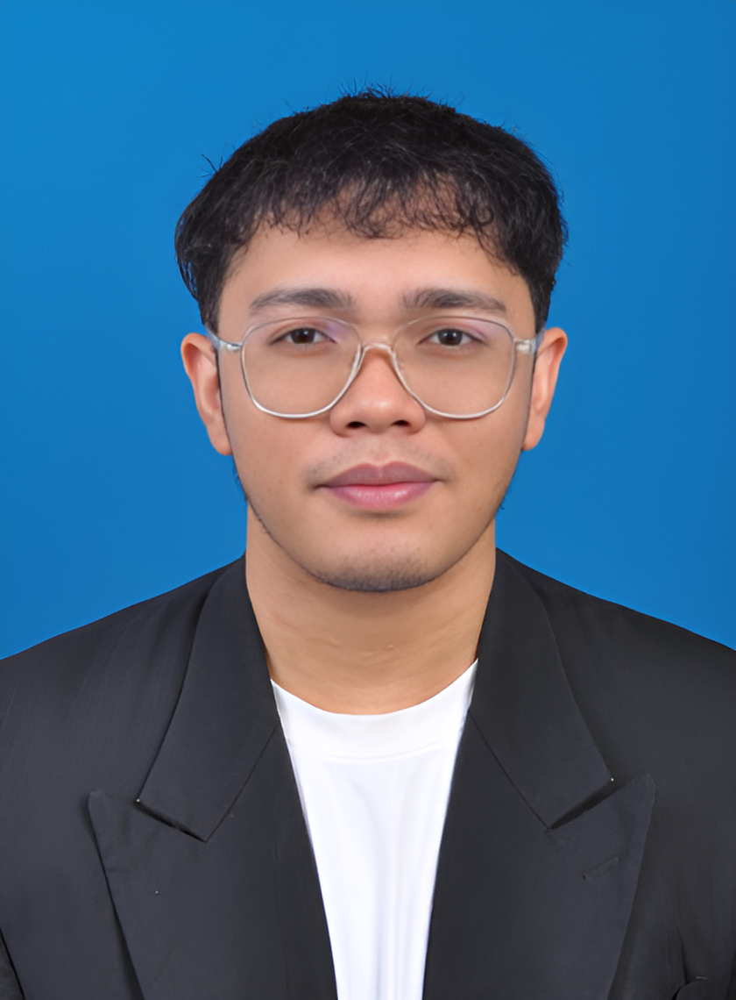

SYED MUHAMMAD HAIKAL BIN SYED HUSNI
syedyangsebenar@gmail.com
GitHub
LinkedIn
Career Objective
Ambitious Computer Science graduate with a major in Software Engineering from Universiti Sains Malaysia (USM). Proficient in web design frameworks like Laravel, PHP, and JavaScript, with experience in Unity game engine and VR development. Seeking a web development or any IT-related position at Telekom Malaysia (TM), where I can apply my skills, contribute to innovative projects, and grow professionally while supporting the company’s technological goals. Willing to relocate.
Education
- K – Youth Development Programme (Foundation of Software Engineering, TalentLabs) - September 2024
- Universiti Sains Malaysia - Bachelor of Computer Science, Major in Software Engineering (2020 - 2024)
CGPA: 3.32/4.00 | MUET: Band 4
Work Experience
IT Trainee
Kubang Pasu District Office (Pejabat Daerah Kubang Pasu) - 2023
- IT Technical Support: Performed hardware and software support on obsolete desktop computers, including repairs and optimization while handling technological assets documentation.
- Network Support: Reconnected desktop computers which frequently lost connection access to the local server while helping with local server switch reconfiguration and LAN management.
- Software Development: Performed and facilitated full-stack software development project (PDKP Booking System).
Projects
- myReno – Home Decoration Portal (Final Year Project) - 2024
Built using Laravel framework and Node.js. Hosted on fly.io with fly Postgres for database. Includes features like report and PDF generation, real-time messaging, and demo payment gateway using Stripe.
- Other Web Applications:
- ReportTruzz – Web app for the community to collaborate on reporting infrastructure damages with authorities.
- Mart4U – E-commerce web application.
- PDKP Booking System – Booking system for Kubang Pasu District communities.
- Others:
- Chaos Ascendance – 2D turn-based video game (Java).
- Tomato Hunter – VR Game (Unity and Pico 4 VR integration).
- Young Bluds – Short animation (Blender).
- Smart Pet Cage – Using Vitrox V-One and Cytron Maker Feather AIoT sets for smart pet cage.
Extracurricular Activities
- USM Google Developer Students Club - Web Development Workshop, Microsoft Azure Fundamentals Workshop.
Skills
- General Skills: Database Design, Software Quality and Testing, Machine Learning and Algorithms, Software Requirements Analysis, Networks & Information Security, Software Architecture & Design, IoT Architecture, VR.
- Programming Languages: PHP, Python, JavaScript, C++, C#, Java, SQL, HTML, CSS.
- Technical Skills: Laravel, Git, Arduino.
- Technical Softwares: Visual Studio Code, Figma, XAMPP, Unity, Tableau, Docker, Arduino IDE, Jupyter.
- Other Softwares: Microsoft Office, Canva, GIMP, Filmora.
Languages
- Malay: Native
- English: Fluent